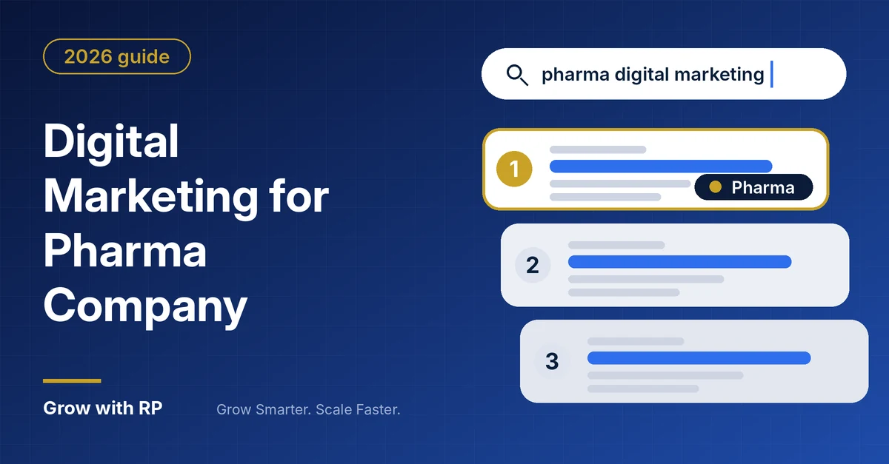

Pharma buyers no longer wait for a sales rep to knock on the door. Distributors, chemists, doctors and franchise partners search online first. They check your website, read your reviews and compare you with other brands, all before they call you. This guide explains digital marketing for pharma company brands in simple steps. It covers the rules, the channels and a 90-day plan you can start now.
Why Digital Marketing for Pharma Company Brands Matters in 2026
Three numbers explain the shift.
- India's domestic pharma market is worth about USD 60 billion and could reach USD 130 billion by 2030. The country has more than 3,000 companies and 10,500 manufacturing units. More competition means buyers have more choice.
- India had about 1.04 billion internet users at the end of 2026, which is 70 percent of the population.
- Short-video content reaches about 588 million Indian users. Your audience watches, scrolls and searches every day.
A strong online presence now decides who gets the enquiry. That is why a good digital marketing company in India can make a real difference to a pharma brand.
Know the Rules Before You Market
Pharma is a regulated field. A fast campaign that breaks the rules can hurt your brand.
- Prescription drugs: Drugs under Schedules H, H1 and X need prior approval from the Central Government before any advertisement. Do not promote them to the public.
- Marketing code: The Department of Pharmaceuticals issued the UCPMP 2024 on March 12, 2024. It says promotion must match the product's marketing approval.
- Google Ads: Advertisers targeting India may not promote prescription drugs in ads or landing pages. Pharma manufacturers can promote over-the-counter medicines in India.
Never make claims you cannot prove. Avoid words like "cure" or "100% safe". Ask a legal or regulatory expert to review your copy.
Best Digital Marketing for Pharma Company: The Core Channels
The best digital marketing for pharma company growth is not one tactic. It is a system where each channel supports the others.
SEO: Your Long-Term Lead Engine
Buyers search for terms like "PCD pharma franchise", "third-party manufacturing" and "pharma distributor opportunity". Your pages must answer those questions clearly.
A good SEO company for pharma company brands will focus on:
- One page for each product category and service.
- Clear details such as dosage form, manufacturing location and license information.
- Fast, mobile-friendly pages.
- Honest content written for B2B buyers, not patients.
- Internal links between related pages.
Strong SEO services for pharma company websites also include Google Business Profile setup, local citations and quality backlinks from relevant industry sites. Avoid link packages that promise "1,000 backlinks". They can harm your site.
Website Development and Design: Your Digital Office
Your website is your most important sales tool. A weak site wastes every ad rupee you spend.
A skilled website development company for pharma company projects will build:
- A product catalogue sorted by therapy area.
- A simple franchise enquiry form.
- A visible phone and WhatsApp button.
- Clean code and quick loading on mobile.
A good website design company for pharma company brands also adds trust signals. Show your certifications, plant photos and contact details only if they are real and current. Visitors leave quickly when a site looks outdated.
Social Media: Build Trust, Not Just Followers
A social media marketing agency for pharma company clients should aim for credibility. Share:
- Short plant or process videos.
- Team introductions.
- Event updates and awareness posts.
- Explainers about your business model.
Post on LinkedIn for B2B reach. Use Instagram and YouTube Shorts for brand visibility. Keep every post accurate and free of unapproved product claims.
Meta Ads: Reach Distributors and Entrepreneurs
A skilled Meta Ads agency for pharma company campaigns can target business owners, chemists and aspiring distributors. Follow these steps:
- Promote business opportunities, such as franchise enquiries. Do not promote prescription drugs.
- Send traffic to a fast landing page with one clear action.
- Install the Meta Pixel and track every lead.
- Test two or three creatives at a time.
- Call new leads quickly, ideally within the hour.
Google Ads: Capture People Who Already Want to Buy
Search ads reach buyers at the exact moment they look for you. Good Google Ads services for pharma company brands include:
- Keyword research based on business intent.
- Negative keywords to block wasted clicks.
- Separate campaigns for franchise, manufacturing and product searches.
- Conversion tracking for calls, forms and WhatsApp clicks.
Check Google's healthcare policy before launch. Rules changed in April 2026, so do not rely on old advice.
Digital Marketing Services in Panchkula
The Chandigarh Tricity region has many PCD pharma, distribution and manufacturing businesses. Local competition is strong, so local visibility matters.
Digital marketing services in Panchkula should include:
- A verified Google Business Profile with correct address and hours.
- Location pages with real, useful local details.
- Honest customer and partner reviews.
- Local ads that reach nearby distributors and suppliers.
Grow with RP is a digital marketing company in India that supports pharma and healthcare brands with SEO, social media, paid ads and website work. If you run a business in Panchkula, local support means faster meetings and clearer communication. Read our guide to a digital marketing company in Panchkula.
How to Choose a Digital Marketing Company in India
Ask these questions before you sign:
- Do they understand pharma rules?
- Do they explain their plan in simple words?
- Do they share real reports, not vanity numbers?
- Do they avoid guaranteed rankings?
- Do they track leads, not just clicks?
Walk away from any agency that promises "page one in 7 days". No one can control Google rankings.
A Simple 90-Day Plan
Days 1 to 30: Foundation
- Audit your website and fix speed and mobile issues.
- Set up Google Analytics 4, Search Console and tracking.
- Research keywords and map them to pages.
Days 31 to 60: Build
- Publish product and service pages.
- Launch your Google Business Profile updates.
- Start LinkedIn and Instagram posting.
Days 61 to 90: Grow
- Run small Google Ads and Meta Ads tests.
- Improve pages with low conversion.
- Review lead quality and adjust.
Metrics That Matter
Track business results, not just traffic:
- Qualified enquiries per month.
- Cost per qualified lead.
- Lead-to-meeting rate.
- Organic clicks from Search Console.
- Calls and WhatsApp chats.
FAQs on Digital Marketing for Pharma Company Brands
What is digital marketing for pharma company brands?
It means promoting your business online through SEO, websites, social media and paid ads. It must follow Indian pharma advertising rules.
How big is the market for a pharma company in India in 2026?
The domestic market is about USD 60 billion and could reach USD 130 billion by 2030. Online visibility helps you compete for that growth.
What is the best digital marketing for pharma company growth?
Combine SEO, a strong website, social media and tested paid ads. Start with the website and SEO, then add ads.
Can I run Google Ads for prescription medicines in India?
Advertisers targeting India may not promote prescription drugs in ads or landing pages. Focus on franchise, manufacturing and OTC promotion where allowed.
Why do I need an SEO company for pharma company websites?
Pharma search terms are specific and competitive. A specialist knows how to write accurate, helpful pages that rank without risky claims.
What do SEO services for pharma company brands include?
They include keyword research, technical fixes, product page writing, local SEO, link building and monthly reporting.
Why does website design matter for a pharma business?
Buyers judge your company by your site. A clean, fast and honest design builds trust and lifts enquiries. A professional website development company for pharma company projects also keeps your site secure and easy to update.
Is a social media marketing agency for pharma company brands worth it?
Yes, if it focuses on trust and compliance. Good agencies avoid unapproved claims and build your brand with real company content.
How does a Meta Ads agency for pharma company campaigns find good leads?
It targets business owners and distributors with clear offers, tests creatives and tracks every lead. It never promotes prescription drugs to the public.
Who offers digital marketing services in Panchkula for pharma brands?
Grow With RP offers digital marketing services in Panchkula, including SEO, social media, Google Ads and websites. Ask for a free review of your current online presence.
Final Thoughts
Digital marketing for pharma company success comes from trust, clarity and compliance. Fix your website first. Build content that answers real buyer questions. Then add ads to speed up results.
Ready to grow? Contact Grow With RP at growwithrp.tech for a practical plan that fits your budget.
Sources
- IBEF and PIB, Indian Pharmaceutical Industry, March 2026
- DataReportal, Digital 2027: India
- Business Today, IAMAI Internet in India Report 2025, January 29, 2026
- Google Ads Help, Update to Healthcare and Medicines Policy (April 2026)
- Google Ads Help, Healthcare and medicines: Pharmaceutical manufacturers
- CMS Expert Guide, Advertising of medicines and medical devices in India
- Department of Pharmaceuticals, UCPMP 2024
- KPMG India, Navigating the new regulatory terrain
Get a Free Consultation
Tell us about your business and we will suggest a plan that fits.
Talk to Grow with RP